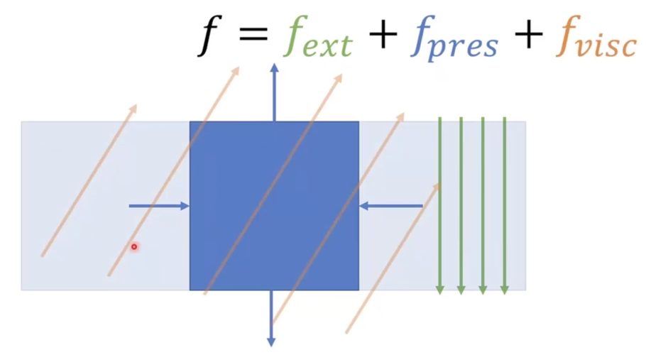

流体仿真CFD
流体仿真中的受力
如下图，看一下流体中的一小个区域，它的受力有：
- 外力：例如重力
- 压力：周围区域对该区域产生的压强
- 粘性力：周围区域对该区域产生的“剪切力”，迫使区域和它们有相同的运动趋势

可压缩性
流体仿真里面有可压缩流体和不可压缩流体的仿真，它们使用了不同的方法（公式）来模拟逼近压缩和不可压缩的效果。但它们都离不开Navier-Stokes方程。
Navier-Stokes方程
纳维-斯托克斯方程的公式如下：
\(\displaystyle\frac{Dv}{Dt}=-\frac{1}{\rho}\nabla p+\nu\nabla^2v+f_{ext},\quad \nabla\cdot v=0\)
公式的含义如下：
\(\nabla\) 是向量微分算子，\(\nabla=\left [\displaystyle\frac{\partial}{\partial x},\frac{\partial}{\partial y}, \frac{\partial}{\partial z}\right ]\)
\(\nabla^2\) 是拉普拉斯算子，是梯度的散度，表达的是“扩散能有多快”，或者想像成“与周围的量要保持趋同”。
\(\displaystyle\frac{Dv}{Dt}\) 是材料导数，\(v(x,t)\)是粒子关于位置和时间的速度，是一个惯性项
\(-\displaystyle\frac{1}{\rho}\nabla p\) 是压力项，只看公式的话，则是“一个物体受到的力，和它压力的梯度大小相反”。可以想像成，当粒子在空间中分布的压力\(p\)的变化曲线“越陡”，压力梯度的值越大，则粒子就越会朝着相反的方向“被挤开”。一个简单的例子，当粒子从压力小的地方朝着压力高的地方运动，此时\(\nabla p\)是个正数（斜率为正），那么粒子就会倾向于“往回弹”。关于\(p\)，使用不同的求解方法，\(p\)有不同的表达。一般来说可以表达为\(p=k(\rho-\rho_0)\)，\(\rho_0\)是初始的密度，压力和密度线性相关。公式的意思是，当\(\rho\)密度小于初始密度\(\rho_0\)时，压强\(p\)是个负数，想像成粒子有被从密度高的地方往密度低的地方“推回去”的趋势（或者是低压力的地方“吸引”其他粒子过来）；而当\(\rho\)密度大于初始密度\(\rho_0\)时，压强\(p\)是个正数，想象成粒子所处的高密度地区，有一个被“推往”低密度地方的“推力”。但是，\(\rho\)往往是个未知量，方程不好解。
\(\nu\nabla^2v\) 是粘性项，对应上述粘性力。形象地说，当一个粒子在运动时会保持和它邻居运动方向一样趋势的一个力。\(\nu=\displaystyle\frac{\mu}{\rho_0}\)，其中\(\mu\)是剪切模量（固体）/ 动态粘度（液体）
\(f_{ext}\) 是外力项，根据具体场景有所不同
\(\nabla\cdot v=0\) 速度的散度为零表示流入和流出的速度没有变化，即液体没有压缩（不可压缩液体）。解释：\(\nabla\cdot v=\displaystyle\frac{\partial v}{\partial x}+\frac{\partial v}{\partial y}+\frac{\partial v}{\partial z}\)，其中每一项偏微分代表一个微小体积在该方向上的速度变化。以\(x\)方向为例，如果\(\displaystyle\frac{\partial v}{\partial x}>0\)，则粒子在该微小体积内在\(x\)方向上流出的速度大于流入的速度，液体就“膨胀”了；相反，如果\(\displaystyle\frac{\partial v}{\partial x}<0\)，则流出速度比流入速度小，粒子在该体积内被“压缩”了。然而，\(\displaystyle\frac{\partial v}{\partial x}+\frac{\partial v}{\partial y}+\frac{\partial v}{\partial z}=0\) 并不一定需要每一项都为零，比如可以是\(x\)方向小了，但\(y\)方向大了，整体为零即可。整体为零意味这液体在这个微小体积内整体的速度不变，即没有被压缩。
流体仿真步骤
基于算子分裂法的流体仿真步骤
-
忽略压力项，求解一个估计的速度\(v^*\)，公式为\(\displaystyle\frac{Dv^*}{Dt}=\nu\nabla^2v^*+f_{ext}\)，也可以理解为根据\(v_n\)先求得\(v_{n+0.5}\)：
-
求解：\(dv=g+\nu\nabla^2v_n\)
-
更新：\(v_{n+0.5}=v_n+\Delta tdv\)
-
-
根据不可压条件\(\nabla\cdot v= 0\) 或者\(\displaystyle\frac{D\rho}{Dt}\)计算\(p\)
-
通过\(\displaystyle\frac{Dv}{Dt}=-\frac{1}{\rho}\nabla p\) 修正估计速度\(v^*\)，也叫投影/压力求解器，可以理解为根据\(v_{n+0.5}\)求得最终需要的\(v_{n+1}\)
-
求解：\(dv=-\displaystyle\frac{1}{\rho}\nabla(k(\rho-\rho_0))\) 以及\(\displaystyle\frac{D\rho}{Dt}=\nabla\cdot (v_{n+0.5}+v_n)=0\)
-
更新：\(v_{n+1}=v_{n+0.5}+\Delta tdv\)
-
-
根据速度更新位置信息\(\displaystyle\frac{Dx}{Dt}=v\)，更新泊松：
- 更新：\(x_{n+1}=x_n+\Delta tv_{n+1}\)
这种方式叫算子分裂法。还有另一个名字叫投影法（advection-projection），因为是在先求得一步“不对”的\(v\)之后，再将结果投影回来求得正确结果。
弱可压缩流体
弱可压缩流体的思路：
对于弱可压缩流体，可以不考虑这一项\(\nabla\cdot v=0\)
而只考虑：\(\displaystyle\frac{Dv}{Dt}=-\frac{1}{\rho}\nabla p+\nu\nabla^2v+f_{ext}\)
离散：\(\displaystyle\frac{dv_i}{dt}=g-\frac{1}{\rho}\nabla p(x_i)+\nu\nabla^2 v(x_i)=a_i\)
更新速度：\(v_i=v_i+\Delta ta_i\)
更新位置：\(x_i=x_i+\Delta tv_i\)
但是，如何求得\(\rho_i, \nabla p(x_i), \nabla^2v(x_i)\)？